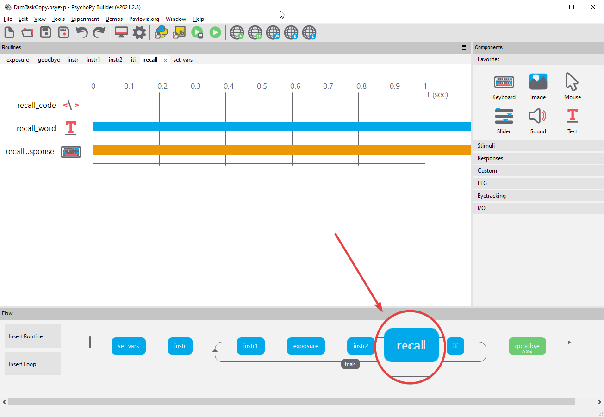

Chapter 2 Solution for Feedback Challenge
Add feedback for the recall phase.
- First, locate the routine for the
recallphase.

Then click on recall_response and select the data tab to see that we are recording accuracy for this response with reference to a variable called correct_response.

This gives us access to a variable called recall_response.corr which is 0 in the event that the trial was incorrect and 1 in the event that the trial was answered correctly.
Now we can insert a routine that presents feedback if the current phase is recall
Click on insert routine, and name it recall_feedback.
Use the cursor to place the routine just after recall.
Add a text component that says “Correct” and make it start on the condition that recall_response.corr == 1.
Add a text component that says “Wrong!” and make it start on the condition that recall_response.corr == 0.
Finally, add a code compnent that says, effectively, “skip this routine if we are in an exposure trial”